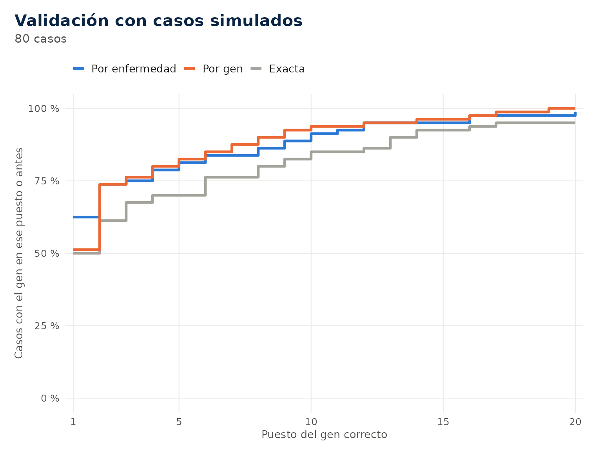

Ejemplo mínimo. Las versiones de los datos de referencia que usa el paquete.
iei_fuentes()
#> fuente
#> 1 PanelApp
#> 2 HPO
#> 3 HPO ontologia
#> 4 HPO enfermedades
#> 5 HPO genes a enfermedad
#> 6 Curacion IUIS
#> 7 Mecanismo GOF
#> 8 Genes dificiles
#> detalle version
#> 1 Primary immunodeficiency or monogenic inflammatory bowel disease 8.78
#> 2 genes_to_phenotype.txt v2026-09-01
#> 3 hp.obo v2026-09-01
#> 4 phenotype.hpoa v2026-09-01
#> 5 genes_to_disease.txt v2026-09-01
#> 6 data-raw/iuis_curado.csv git
#> 7 data-raw/iuis_mecanismo.csv git
#> 8 data-raw/genes_dificiles.csv git
#> url
#> 1 https://panelapp.genomicsengland.co.uk/api/v1/panels/398/?version=8.78
#> 2 https://github.com/obophenotype/human-phenotype-ontology/releases/download/v2026-09-01/genes_to_phenotype.txt
#> 3 https://github.com/obophenotype/human-phenotype-ontology/releases/download/v2026-09-01/hp.obo
#> 4 https://github.com/obophenotype/human-phenotype-ontology/releases/download/v2026-09-01/phenotype.hpoa
#> 5 https://github.com/obophenotype/human-phenotype-ontology/releases/download/v2026-09-01/genes_to_disease.txt
#> 6 https://github.com/Gentlenmoron/ieiprio/blob/master/data-raw/iuis_curado.csv
#> 7 https://github.com/Gentlenmoron/ieiprio/blob/master/data-raw/iuis_mecanismo.csv
#> 8 https://github.com/Gentlenmoron/ieiprio/blob/master/data-raw/genes_dificiles.csv
#> fecha md5
#> 1 2026-10-06 6fe89080779880f14fa5c10a96941967
#> 2 2026-10-06 6dac74395b2a9192dc0e71594093594f
#> 3 2026-10-11 97620d1eae29ff3665ee644a7315b0f1
#> 4 2026-10-12 b4125a21c9ba916d10ce7551e55ead53
#> 5 2026-10-12 337ee42c2c17f2d89ec5d21ba7515c67
#> 6 2026-10-11 b9d01b959dae9f62c770e423063a477a
#> 7 2026-10-11 c88b6ea644c5c91fd7cc615cc6396fb3
#> 8 2026-10-12 076cdb6fe9cafcda29f70ef3f34e4be4Cada fuente está fijada a una versión y a una huella md5, y el reporte las copia para que el análisis se pueda repetir.
1. Alcance
ieiprio lee variantes desde VCF, cromatogramas Sanger
(.ab1 y .scf), FASTA, secuencias escritas e
informes en PDF, Word o texto. Las anota con Ensembl VEP, gnomAD y
ClinVar, las prioriza con reglas explícitas, sugiere criterios ACMG/AMP
con su clase por puntos, compara el fenotipo HPO del caso con cada
enfermedad del panel y genera un reporte HTML. También dibuja
cromatogramas, dot plots de secuencias y gráficos del genoma.
El paquete trabaja solo con lo que sale de la secuencia y de bases curadas (Ensembl, ClinVar, gnomAD, HPO, PanelApp e IUIS). No recibe antecedentes familiares, segregación ni exámenes clínicos, porque esa información no se puede verificar en la secuencia y hace el análisis menos reproducible. No llama CNV por cobertura, no evalúa la cobertura de los genes porque eso requiere el BAM y no analiza expresión ni splicing desde ARN.
Esta guía describe los datos de referencia, los parámetros, las reglas del puntaje, los criterios ACMG, la similitud de fenotipo y su validación.
2. Datos de referencia
El panel de genes es el panel 398 de PanelApp de Genomics England, con el nivel de evidencia y el modo de herencia de cada gen. Las categorías IUIS se derivan de los fenotipos de PanelApp y de una curación propia, y los genes con enfermedad por ganancia de función vienen de una lista curada. Los fenotipos provienen de la Human Phenotype Ontology, con la ontología completa, las anotaciones por gen y las anotaciones por enfermedad, que incluyen la frecuencia de cada signo y los signos excluidos. Los genes difíciles son una curación propia de genes con pseudogenes, duplicaciones segmentarias, número de copias variable o enfermedad por mosaico.
Cada archivo está fijado a una versión y verificado con su huella
md5, y el script data-raw/construir_datos.R reconstruye
todos los datos desde las fuentes. iei_actualizar_panel()
descarga una versión más nueva del panel a la caché sin modificar los
datos del paquete.
3. Parámetros
En R un parámetro que no se escribe toma su valor por defecto. Las tablas siguientes muestran los parámetros de uso habitual de cada función y cuándo conviene cambiarlos. La referencia de cada función en el sitio incluye la lista completa.
3.1 Lectura
| Función | Parámetro | Por defecto | Uso |
|---|---|---|---|
iei_leer_vcf() |
sexo |
sin indicar |
"M" o "F", uno por muestra si hay
varias |
muestras |
todas | Leer solo algunas muestras de un VCF con varias | |
build |
"auto" |
Indicar GRCh37 o GRCh38 si el encabezado no lo declara | |
iei_sanger() |
gen o region
|
obligatorio | Gen o región contra la que se alinea la lectura |
referencia |
Ensembl | FASTA con la región en la cabecera, o lista con
secuencia, inicio y chr, para
trabajar sin conexión |
|
min_calidad |
20 | Calidad Phred mínima de la base para llamar una variante | |
umbral_het |
0.33 | Altura mínima del segundo pico relativa al primero; 0.2 para mosaicos | |
recorte |
0.01 | Exigencia del recorte de extremos; 0.05 conserva más bases | |
cebadores |
ninguno | Secuencias de los cebadores que se recortan de la lectura | |
indels_het |
TRUE |
Llamar indels heterocigotas por deconvolución | |
iei_variantes() |
genotipo |
el del texto |
"het", "hom_alt" o "hemi" si
el texto no lo dice |
build |
"GRCh38" |
Coordenadas del informe |
iei_sanger(c("BTK_F.ab1", "BTK_R.ab1"), gen = "BTK", sexo = "M", umbral_het = 0.2)3.2 Filtrado
| Parámetro | Por defecto | Uso |
|---|---|---|
genes |
panel de PanelApp | Panel propio, por ejemplo solo genes ligados al X |
evidencia |
"verde" |
Agregar "ambar" cuando el caso no se resuelve |
min_dp |
10 | Profundidad mínima; más alta en exomas de alta cobertura |
min_gq |
20 | Calidad mínima del genotipo |
min_ab |
0.2 | Fracción alélica mínima en heterocigotos |
solo_pass |
TRUE |
Conservar solo variantes con FILTER = PASS
|
margen |
20 | Pares de bases agregados a cada lado del gen |
min_ab_mosaico |
0.05 | Fracción alélica mínima en genes con enfermedad por mosaico |
table(iuis_panel$evidencia)
#>
#> ambar rojo verde
#> 72 140 371
ligados_x <- iei_panel(herencia = "XL")$gen
head(ligados_x, 10)
#> [1] "ATP6AP1" "BTK" "CD40LG" "CFP" "CYBB" "DKC1" "DOCK11"
#> [8] "ELF4" "FOXP3" "G6PD"
iei_filtrar(vcf, genes = ligados_x, min_dp = 20)3.3 Anotación
| Función | Parámetro | Por defecto | Uso |
|---|---|---|---|
iei_anotar() |
normalizar |
TRUE |
Recortar y alinear a la izquierda las indels |
clinvar |
TRUE |
Estrellas de ClinVar y criterios PS1, PM5 y PM1 | |
gnomad |
FALSE |
Homocigotos sanos, FAF95 y restricción del gen | |
vep_json |
ninguno | Salida JSON de un VEP local, para anotar sin conexión | |
cache |
carpeta de usuario |
FALSE fuerza una consulta nueva |
|
iei_filtrar_frecuencia() |
max_af |
AD y XL 0.0001, AR 0.01 | Frecuencia máxima en gnomAD según la herencia |
iei_gnomad() |
max_variantes |
50 | Límite de consultas a gnomAD |
Para cada variante se elige un transcrito, primero uno del gen asignado, luego el MANE Select, luego el canónico y al final el de mayor impacto. La frecuencia de referencia es la FAF95 si se consultó gnomAD, si no la del grupo poblacional más alto sin los grupos con efecto fundador, y en último caso la global. Las variantes ausentes de gnomAD siempre pasan el filtro.
iei_filtrar_frecuencia(anotado, max_af = c(AD = 1e-4, XL = 1e-4, AR = 0.02, `AR/AD` = 0.02, MT = 0.01))Un VEP instalado localmente permite anotar sin enviar coordenadas.
iei_vep_entrada() escribe la entrada, VEP se ejecuta con
salida JSON y el resultado se pasa a iei_anotar().
iei_vep_entrada(filtrado, "para_vep.txt")
anotado <- iei_anotar(filtrado, vep_json = "vep.json", clinvar = FALSE)3.4 Priorización
| Parámetro | Por defecto | Uso |
|---|---|---|
fenotipo |
ninguno | Términos HPO o texto del cuadro clínico |
fenotipo_ausente |
ninguno | Signos que el paciente no tiene |
categoria |
ninguna | Categorías IUIS sospechadas, en lugar de HPO |
similitud |
"enfermedad" |
"semantica" compara con todos los términos del gen y
"exacta" solo con los idénticos |
pesos |
iei_pesos() |
Puntos de cada componente y cortes de categoría |
3.5 Gráficos de secuencias, exploración y salidas
| Función | Parámetro | Por defecto | Uso |
|---|---|---|---|
iei_cromatograma() |
ventana |
12 | Bases a cada lado de la variante |
estilo |
"clasico" |
"iei" usa el tema del resto de los gráficos |
|
iei_dotplot() |
ventana |
10 | Largo de la ventana de comparación |
umbral |
8 | Coincidencias mínimas en la ventana para marcar un punto | |
y |
la referencia | Otra secuencia para comparar | |
iei_buscar_fenotipo() |
n |
20 | Número de genes devueltos |
herencia |
todas | Limitar a "AR", "AD", "XL" o
"MT"
|
|
ausentes |
ninguno | Signos que el caso no tiene | |
p_valor |
FALSE |
Valor p por permutaciones | |
iei_gen() |
clinvar, proteina
|
TRUE |
Variantes de ClinVar y dominios de la proteína |
iei_reporte() |
paciente |
obligatorio con varias muestras | Código de la muestra |
dominios |
TRUE |
Consultar los dominios de la proteína | |
iei_exportar() |
formato |
según la extensión |
tsv, xlsx, vcf,
bed o json
|
4. Fundamentos técnicos
4.1 Calidad de una muestra
Antes de interpretar variantes conviene saber si la muestra es confiable. El reporte calcula tres medidas con todas las variantes del VCF. La relación entre transiciones y transversiones (Ti/Tv) refleja que las transiciones (A↔︎G, C↔︎T) son más frecuentes que las transversiones por la química del ADN. Ronda 2.0 en genomas y 2.8 a 3.0 en exomas, y un valor mucho menor sugiere llamados falsos. La relación entre heterocigotos y homocigotos alternativos suele estar entre 1.5 y 2.0; un exceso de homocigotos indica consanguinidad o pérdida de heterocigosidad, y un exceso de heterocigotos, contaminación. Por último, un varón casi no tiene heterocigotos en el cromosoma X fuera de las regiones pseudoautosómicas, y eso permite estimar el sexo de la muestra y detectar un error de identidad.
4.2 Frecuencia poblacional y Hardy-Weinberg
Una enfermedad rara no puede deberse a una variante común. El equilibrio de Hardy-Weinberg relaciona la frecuencia de un alelo con la de los genotipos. Si es la frecuencia del alelo causal, la proporción de homocigotos es y la de portadores sanos es .
En una enfermedad recesiva la prevalencia acota la frecuencia del alelo causal a . En una dominante con penetrancia completa cada enfermo tiene una sola copia, así que el alelo no puede superar la mitad de la prevalencia.
| Prevalencia | Alelo máximo, recesiva | Portadores, recesiva | Alelo máximo, dominante |
|---|---|---|---|
| 1 en 10 000 | 0.01 | 2 % | 0.00005 |
| 1 en 100 000 | 0.0032 | 0.63 % | 0.000005 |
| 1 en 1 000 000 | 0.001 | 0.2 % | 0.0000005 |
Los cortes por defecto de iei_filtrar_frecuencia() (0.01
en recesivas y 0.0001 en dominantes y ligadas al X) quedan por encima de
esos valores a propósito, para no descartar variantes en poblaciones
poco representadas en gnomAD ni en genes con penetrancia incompleta. La
frecuencia que se compara es la FAF95, el límite inferior del intervalo
de confianza en el grupo con la frecuencia más alta, que evita que un
alelo raro parezca común por azar.
4.3 Lectura de cromatogramas
En un cromatograma cada base es un pico de fluorescencia. Un
heterocigoto produce dos picos superpuestos en la misma posición, y
iei_sanger() lo llama cuando el segundo pico mide al menos
un tercio del primero y sus vecinos están limpios. Una inserción o
deleción heterocigota se ve distinto. Hasta el punto del cambio la
lectura es limpia, y desde ahí se mezclan dos secuencias desplazadas
bases. Para cada desplazamiento posible entre 1 y 30, el paquete cuenta
en qué fracción de las posiciones siguientes el par de picos coincide
con las bases de la referencia en
y en
,
y elige el
que explica más picos. Si ese
explica al menos el 80 %, llama la indel y su tamaño. Si no, avisa para
revisión manual.
4.4 Dot plot por ventanas
iei_dotplot() usa el método clásico de Maizel y Lenk
(1981). Para dos secuencias
e
,
una ventana de largo
y un umbral
,
se marca un punto en
cuando
Dos secuencias idénticas forman la diagonal . Una sustitución apenas la interrumpe, porque las ventanas que la contienen todavía tienen coincidencias. Una deleción de bases en corta la diagonal y la continúa en , y una inserción la corre hacia abajo. Las repeticiones aparecen como diagonales paralelas. Con y el ruido de fondo es bajo en un amplicón de unos cientos de bases. El cálculo se hace en R base con una matriz de igualdades que se suma a lo largo de cada diagonal.
5. Puntaje de prioridad
El puntaje suma componentes independientes, cada uno con una regla
explícita que queda escrita en razones. Sirve para ordenar
la revisión y no es una probabilidad. Los pesos se eligieron para que
una variante con evidencia fuerte de dos fuentes independientes quede en
prioridad alta y para que un portador de una variante recesiva nunca
llegue a alta. No se calibraron con una cohorte.
| Componente | Regla | Puntos |
|---|---|---|
| ClinVar | Patogénica o probablemente patogénica con 2 o más estrellas | +4 |
| ClinVar | Patogénica con 1 estrella | +3 |
| ClinVar | Patogénica sin criterios de revisión | +1 |
| ClinVar | Interpretaciones en conflicto | +1 |
| ClinVar | Benigna | se descarta |
| Impacto | Alto: stop, frameshift, splicing canónico, pérdida de inicio | +3 |
| Impacto | Moderado: missense, inframe; alto en genes de ganancia de función | +1 |
| Frecuencia | Ausente en gnomAD | +1 |
| Predictores | REVEL ≥ 0.644, AlphaMissense ≥ 0.564 o SpliceAI ≥ 0.2 | +1 |
| Predictores | Todos los disponibles indican efecto benigno | −1 |
| Herencia | Genotipo compatible con el gen | +2 |
| Herencia | Posible heterocigoto compuesto en gen recesivo | +2 |
| Herencia | Un solo heterocigoto en gen recesivo | −2 |
| Fenotipo | Similitud con la enfermedad más parecida del gen | 0 a +3 |
Con 9 puntos o más la prioridad es alta, de 5 a 8 media y con 4 o menos baja. Para cambiar un peso se pasa solo el valor que se modifica.
names(iei_pesos())
#> [1] "clinvar_patogenica" "clinvar_una_estrella" "clinvar_sin_estrellas"
#> [4] "clinvar_conflicto" "impacto_alto" "impacto_moderado"
#> [7] "ausente_gnomad" "predictor_a_favor" "predictor_en_contra"
#> [10] "herencia_compatible" "portador_ar" "fenotipo_maximo"
#> [13] "corte_alta" "corte_media"
iei_priorizar(anotado, fenotipo = "agammaglobulinemia", pesos = list(clinvar_patogenica = 5, corte_alta = 10))6. Criterios ACMG/AMP
Se sugieren los criterios que se pueden decidir con los datos disponibles y se suman con el sistema de puntos de Tavtigian y colaboradores (2020).
| Criterio | Condición | Puntos |
|---|---|---|
| PVS1 | Stop o frameshift fuera del último exón, en gen sin enfermedad solo por ganancia de función | +8 |
| PVS1_Strong | Splicing canónico | +4 |
| PVS1_Moderate | Stop o frameshift en el último exón, o pérdida del codón de inicio | +2 |
| PS1 | Mismo cambio de aminoácido que una patogénica de ClinVar | +4 |
| PM1_Supporting | Al menos 3 posiciones con missense patogénicas a 5 aminoácidos o menos | +1 |
| PM2_Supporting | Ausente o muy rara en gnomAD | +1 |
| PM3 | Heterocigoto compuesto en trans según la fase del VCF | +2 |
| PM3_Supporting | Posible compuesto sin fase confirmada | +1 |
| PM4 | Indel en marco o pérdida del codón de stop | +2 |
| PM5 | Otro cambio missense en un codón con una missense patogénica | +2 |
| PP2 | Missense en gen intolerante a missense (Z ≥ 3.09) | +1 |
| PP3 | Algún predictor sobre su umbral | +1 |
| PP4 | Similitud de fenotipo de 0.85 o más | +1 |
| BA1 | Frecuencia mayor a 5 % | benigna |
| BS1 | Frecuencia mayor a la esperable | −4 |
| BS2 | 2 o más homocigotos o hemicigotos sanos en gnomAD | −4 |
| BP4 | Todos los predictores bajo su umbral benigno | −1 |
| BP7 | Sinónima con SpliceAI menor a 0.1 | −1 |
PVS1 se gradúa con una versión simplificada del árbol de Abou Tayoun
y colaboradores (2018) y no evalúa la relevancia del exón ni los codones
de inicio alternativos. PP3 y BP4 usan los umbrales calibrados por
ClinGen para REVEL (Pejaver y colaboradores, 2022) y SpliceAI (Walker y
colaboradores, 2023), y los de sus autores para AlphaMissense (Cheng y
colaboradores, 2023). PS1, PM5 y PM1 requieren
clinvar = TRUE, y BS2 y PP2 requieren
iei_gnomad(). PS2, PM6, PP1 y BS4 no se sugieren porque
dependen del estudio de la familia, que el paquete no usa. Tampoco se
sugieren PS3, PS4, PP5 ni BP6, ni las reglas específicas de los paneles
de expertos de ClinGen.
7. Similitud de fenotipo
Sea un término del caso y un término de la enfermedad. El contenido de información de un término es , donde es la proporción de genes anotados con o con alguno de sus descendientes. La similitud entre ambos es
donde son los ancestros del término, incluido él mismo. Vale 1 si es igual a o más específico y baja según la distancia al ancestro común. Es la forma asimétrica de la medida de Resnik normalizada.
Para una enfermedad , con frecuencia de cada signo, el aporte del término es
con si la frecuencia no se conoce. Si la enfermedad excluye un término del que es igual o descendiente, . Con los signos ausentes del caso se resta
y la similitud final es , con el promedio de sobre los términos del caso. Cada gen toma el valor de su enfermedad más parecida, y los genes sin anotaciones por enfermedad se comparan con todos sus términos juntos.
El diseño se inspira en Phenomizer (Köhler y colaboradores, 2009) y LIRICAL (Robinson y colaboradores, 2020), que también comparan con enfermedades y usan frecuencias y signos ausentes. El paquete no calcula razones de verosimilitud, su objetivo es ordenar los genes de un panel y explicar cada coincidencia.
8. Validación con casos simulados
Para cada caso simulado se elige una enfermedad del panel con al menos 5 signos, se toman 5 signos con probabilidad proporcional a su frecuencia, se reemplaza una parte por su término padre y se agregan signos al azar. Después se registra el puesto del gen correcto entre todos los genes del panel. Los empates cuentan en contra.
v <- iei_validar_fenotipo(n = 80, imprecision = 0.3, ruido = 1, semilla = 1)
v
#> Validacion de la busqueda por fenotipo
#> 80 casos simulados, 5 signos por caso, 30% imprecisos, 1 al azar; 583 genes en
#> competencia.
#> # A tibble: 3 × 5
#> metodo primero top5 top10 mediana
#> <chr> <dbl> <dbl> <dbl> <dbl>
#> 1 enfermedad 62.5 81.2 91.2 1
#> 2 semantica 51.2 82.5 93.8 1
#> 3 exacta 50 70 85 1.5
#> Porcentaje de casos con el gen correcto en el primer puesto, entre los 5 y los
#> 10 primeros. Validacion interna, optimista.
plot(v)
iei_validar_fenotipo(n = 80, imprecision = 0.6, ruido = 2, semilla = 2)
#> Validacion de la busqueda por fenotipo
#> 80 casos simulados, 5 signos por caso, 60% imprecisos, 2 al azar; 583 genes en
#> competencia.
#> # A tibble: 3 × 5
#> metodo primero top5 top10 mediana
#> <chr> <dbl> <dbl> <dbl> <dbl>
#> 1 enfermedad 45 71.2 82.5 2
#> 2 semantica 35 68.8 82.5 3
#> 3 exacta 15 43.8 57.5 8
#> Porcentaje de casos con el gen correcto en el primer puesto, entre los 5 y los
#> 10 primeros. Validacion interna, optimista.En una corrida de 200 casos por escenario, el método por enfermedad puso el gen correcto primero en el 59 % de los casos, contra 49 % por gen y 41 % exacto, y entre los 10 primeros en el 92 %. Con el doble de imprecisión y ruido los porcentajes en primer puesto fueron 40 %, 33 % y 16 %.
Los casos salen de las mismas anotaciones que usa el cálculo, así que la validación es optimista y favorece al método por enfermedad. Sirve para comparar métodos y parámetros. La validación con pacientes reales requiere una cohorte con diagnóstico molecular conocido.
9. Reproducibilidad
Cada reporte registra el nombre y la huella md5 del archivo de entrada, los parámetros de cada paso, los pesos y las versiones de PanelApp, HPO y Ensembl. Con esa información y la misma versión del paquete el análisis da el mismo resultado. Cada función tiene pruebas automáticas con datos sintéticos que corren sin conexión, y una vez por semana se ejecutan pruebas contra los servicios reales.
10. Comparación con otras herramientas
| ieiprio | Exomiser | LIRICAL | |
|---|---|---|---|
| Entrada | VCF, Sanger, FASTA, secuencia, PDF, Word, texto | VCF | VCF y Phenopacket |
| Panel | Errores innatos de la inmunidad | Todo el genoma | Todo el genoma |
| Fenotipo | Similitud por enfermedad con frecuencias y ausentes | Similitud semántica y modelos animales | Razones de verosimilitud |
| Explicación | Razones de cada punto | Puntajes por componente | Razones de verosimilitud por signo |
| ACMG | Sugerencias con clase por puntos | Sí, en versiones recientes | No |
| Instalación | Paquete de R | Java y bases de datos de decenas de GB | Java |
ieiprio no reemplaza a Exomiser o LIRICAL en exomas sin
hipótesis. Con iei_exportar(x, "caso.json") el mismo caso
pasa a esas herramientas como Phenopacket.
11. Glosario
| Término | Definición |
|---|---|
| ACMG/AMP | Estándar para clasificar variantes en cinco clases a partir de criterios con distinta fuerza |
| Alelo | Cada versión de una posición del genoma; ref es el de
referencia y alt el encontrado |
| Build | Versión del genoma de referencia, GRCh38 o GRCh37 |
| ClinVar | Base de datos del NCBI con clasificaciones de variantes; las estrellas miden su revisión |
| CNV | Deleción o duplicación de un segmento, desde un exón hasta varios genes |
| Compuesto | Dos variantes distintas del mismo gen, una en cada copia |
| Dot plot | Matriz de puntos que compara dos secuencias por ventanas |
| Cis y trans | Dos variantes en la misma copia del gen o en copias distintas |
| FAF95 | Límite inferior del intervalo de confianza de la frecuencia en el grupo más alto de gnomAD |
| Fracción alélica | Proporción de lecturas con el alelo alternativo, cerca de 0.5 en un heterocigoto |
| Ganancia de función | Mecanismo en que la proteína funciona de más o de otra forma |
| gnomAD | Base de frecuencias de variantes en cientos de miles de personas |
| Hemicigota | Variante en el cromosoma X de un varón |
| HGVS | Nomenclatura de variantes, c. para el ADN codificante y
p. para la proteína |
| HPO | Human Phenotype Ontology, códigos jerárquicos para signos clínicos |
| IUIS | Comité que clasifica los errores innatos de la inmunidad en diez categorías |
| MANE Select | Transcrito de referencia acordado entre Ensembl y NCBI |
| Mosaico | Variante presente solo en una parte de las células |
| Phenopacket | Formato de GA4GH para intercambiar fenotipo y variantes de un caso |
| Phred | Escala de calidad; 20 equivale a 1 error en 100 y 30 a 1 en 1000 |
| Pseudogén | Copia no funcional de un gen, a veces casi idéntica |
| REVEL, AlphaMissense, SpliceAI | Predictores del efecto de missense y de splicing, de 0 a 1 |
| VEP | Variant Effect Predictor de Ensembl |
12. Referencias
- Abou Tayoun AN y colaboradores. Recommendations for interpreting the loss of function PVS1 ACMG/AMP variant criterion. Hum Mutat. 2018;39:1517-1524.
- Cheng J y colaboradores. Accurate proteome-wide missense variant effect prediction with AlphaMissense. Science. 2023;381:eadg7492.
- Maizel JV, Lenk RP. Enhanced graphic matrix analysis of nucleic acid and protein sequences. Proc Natl Acad Sci USA. 1981;78:7665-7669.
- Köhler S y colaboradores. Clinical diagnostics in human genetics with semantic similarity searches in ontologies. Am J Hum Genet. 2009;85:457-464.
- Pejaver V y colaboradores. Calibration of computational tools for missense variant pathogenicity classification and ClinGen recommendations for PP3/BP4 criteria. Am J Hum Genet. 2022;109:2163-2177.
- Richards S y colaboradores. Standards and guidelines for the interpretation of sequence variants. Genet Med. 2015;17:405-424.
- Robinson PN y colaboradores. Interpretable clinical genomics with a likelihood ratio paradigm. Am J Hum Genet. 2020;107:403-417.
- Tangye SG y colaboradores. Human inborn errors of immunity: 2022 update on the classification from the International Union of Immunological Societies Expert Committee. J Clin Immunol. 2022;42:1473-1507.
- Tavtigian SV y colaboradores. Modeling the ACMG/AMP variant classification guidelines as a Bayesian classification framework. Genet Med. 2018;20:1054-1060.
- Tavtigian SV y colaboradores. Fitting a naturally scaled point system to the ACMG/AMP variant classification guidelines. Hum Mutat. 2020;41:1734-1737.
- Walker LC y colaboradores. Using the ACMG/AMP framework to capture evidence related to predicted and observed impact on splicing. Am J Hum Genet. 2023;110:1046-1067.